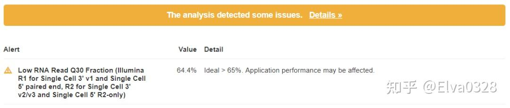
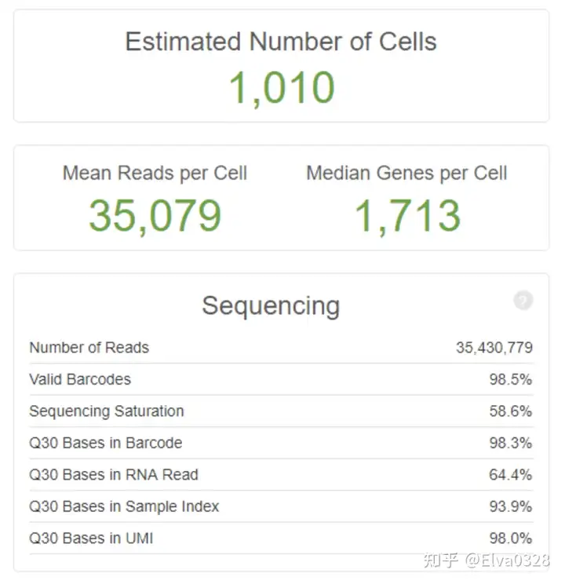
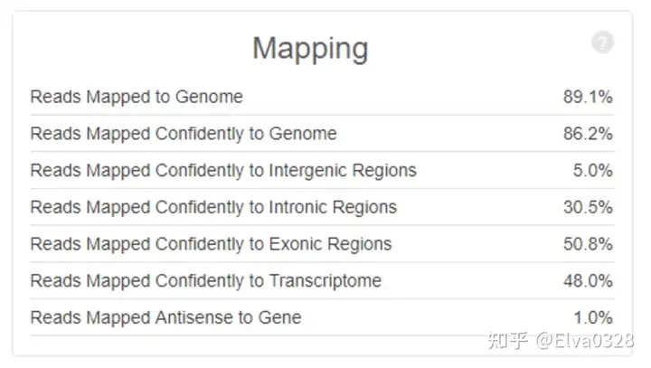
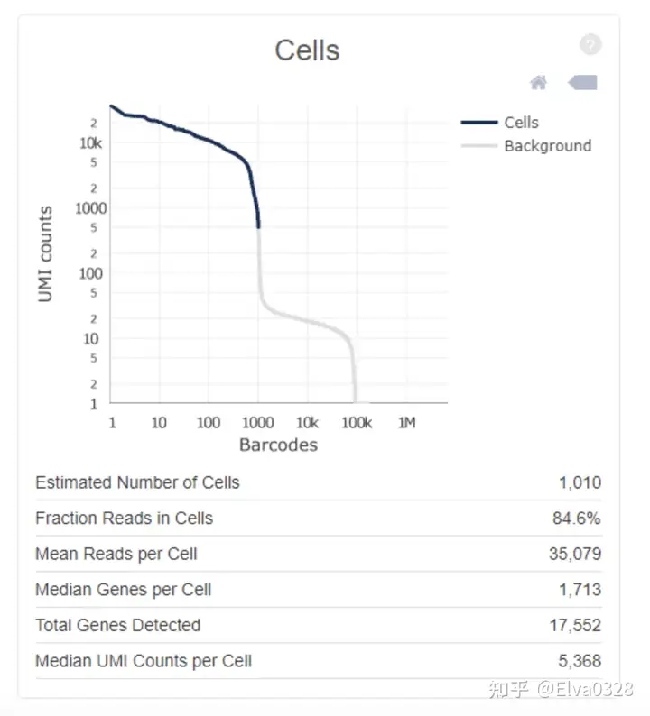
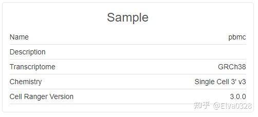
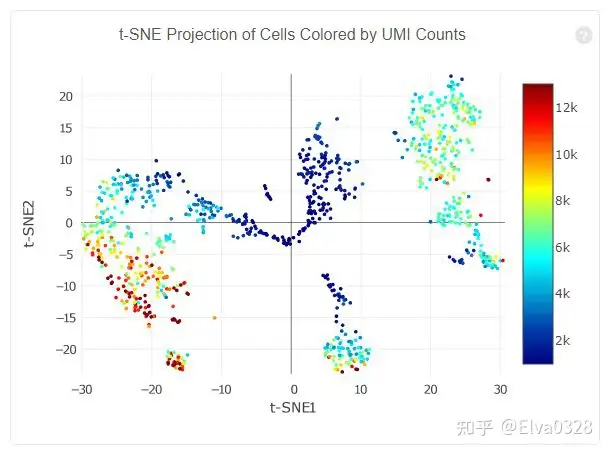
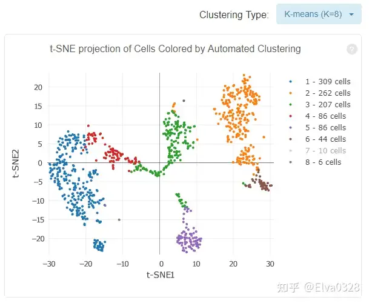
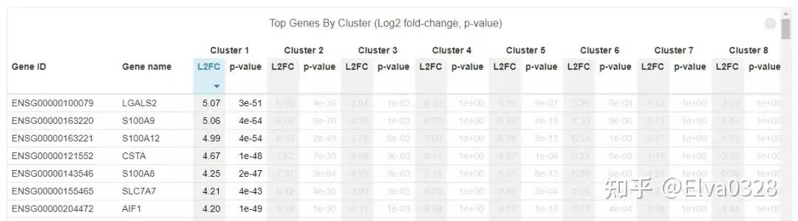
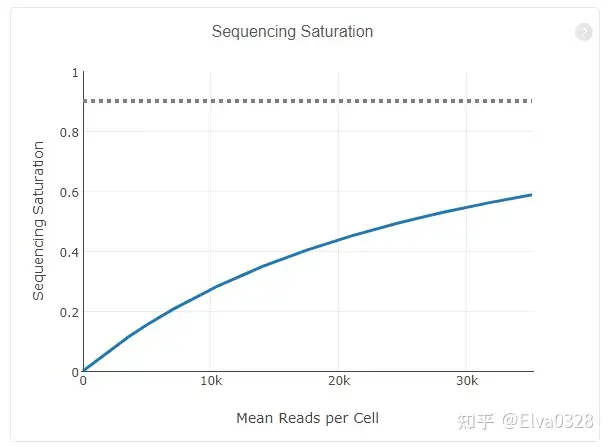
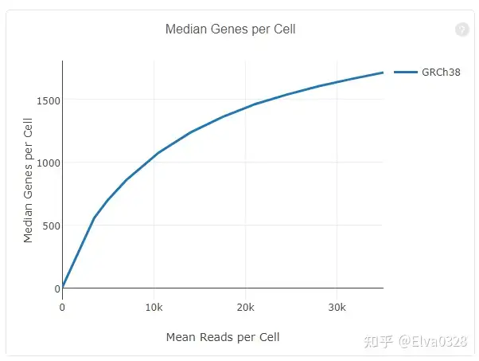

本篇用于记录接触的10X_mRNA数据，以及相关分析结果。
- cellranger count 模块的使用
- cellranger 结果文件的解释
数据下机及质控
10X 数据下机后还是简单的双端fastq文件，只需要使用cellranger就可以进行质控等的分析。
/path/to/cellranger count --id=run_count_samplename \
--fastqs=/path/to/sample_fq_dir \
--sample=samplename \
--transcriptome=/path/to/transcriptome/dir \
--localcores=12
cellranger及相关使用数据库的的下载链接为 cellranger download 历史版本的下家链接为previous versions
结果解释
web_summary.html 文件为总览结果 以下结果来自于知乎分享
该网页的结果分成了summary和analysis两部分，
1. summary
1. 异常结果警告
如果数据中存在异常，在网页的头部会给黄色的警告框，如下所示
 点击Details, 可以看到详细的信息，上图显示RNA reads的Q30比例太低，理想情况是大于65%， 而实际的数据只有64.4%。
2.细胞和基因数目的评估
对样本中的细胞和表达的基因个数评估，同时还给出了barcode, index, umi, RNA reads不同序列的Q30， 示意如下  其中：
| Items | Description |
|---|---|
| Estimated number of cells | 样本测到的细胞数 |
| Mean reads per cell | 每个细胞测到的平均reads |
| Mean reads per cell | 每个细胞基因数的中位数 |
Sequencing中：
| Items | Description |
|---|---|
| Number of reads | 测到的总read数目 |
| Valid barcodes | UMI校正后匹配的UMI数量 |
关于Sequencing saturation：测序饱和度，一般60-80%比较合适（阈值范围可以适当调整，但是高于70%/80%左右绝对OK）
如果测到的细胞数多，但是每个细胞里面的平均reads数少，那么饱和度就不高，反之，饱和度高。但也不是越高越好，到达80%左右就可以代表整个样本了
还有一些Q30 的数据指标
认为要一般要大于65%，少于这个比例的话，这个页面会报错，页面上方有黄色的warning提示。关于这个阈值问题还有一些回复在这个链接中有涉及到一些如何通过cellranger count出来的结果来判断数据质量，回复者贴出来的答案是 Median genes per cell> 1000，Valid barcode > 90%，Q30 > 85%，Fraction reads > 70%
3.比对比例统计
统计reads的比对比例，同时给出比对到基因间区，外显子，内含子的比例，示意如下  这一项的报告就是对cellranger count程序中
–transcriptome=refdata-cellranger 的反馈报告，比对的是人类基因组hg38/小鼠基因组/mm10。
| Items | Description |
|---|---|
| Reads mapped to genome | 比对到选定基因组的reads |
| Reands mapped confidently to genome | 仅仅比对到基因组的reads，如果一条reads既可以比对到外显子区又可以比对到非外显子区，那么算比对到了其中一个外显子区 |
| Reads mapped confidently to intergenic regions | 比对到基因组的基因间区域 |
| Reads mapped confidently to intronic regions | 比对到内含子区域 |
| Reads mapped confidently to exonic regions | 比对到外显子区域 |
| Reads mapped confidently to transcriptome | 比对到转录组的reads，这些读数可以用来UMI的计数 |
| Reads mapped antisense to gene | 测到的总read数目 |
| Number of reads | 比对到基因的相反的reads |
4.细胞数目评估详细信息
比较重要的就是这个曲线图，图中横轴是barcodes，纵轴是UMI数量，绿色线条代表真实的检测到的真实细胞数。通过barcode上的UMI标签分布来评估细胞数目，深蓝色代表细胞，灰色代表背景，示意如下。在前期磁珠（bead）与细胞形成油包水的结构过程中，会存在没有把细胞包进去的情况，这时候的油包水结构里面就只有磁珠和一些barcode的序列，而cDNA的碱基序列一般都是barcode碱基序列的10倍以上，就是由此来确定哪些是真实的细胞，哪些是background。 
| Items | Description |
|---|---|
| Estimated number of cells | 比对到选定基因组的reads |
| Estimated number of cells | 样本测到的细胞数 |
| Fraction reads in cells | valid-UMI的质量分数，代表与细胞相关的UMI可靠地比对到基因组，一般要在70%及以上，否则数据质量就不好 |
| Mean reads per cell | 每个细胞测到的平均reads |
| Median genes per cell | 每个细胞的中间基因数 |
| Total genes detected | 测到的总基因数,至少有一条UMI |
| Median UMI counts per cell | 细胞UMI数量的中间值 |
5.样本基本信息
样本名称，使用的参考基因组等信息，示意如下

2.analysis 部分结果
1. 细胞表达量分布的t-SNE图
UMI标签用于标识转录本，UMI的count值就是转录本的表达量，采用tSNE降维算法， 对细胞的表达量进行可视化，每个点代表一个细胞，示意如下 
2. 细胞亚型
根据表达量对细胞进行聚类，从而识别细胞亚型，提供了两种聚类算法graph-based和k-means, 示意如下  通过右上角的下拉按钮，可以查看不同的聚类结果，结果展示依然是用的t-SNE图，只不过根据聚类结果对颜色进行了调整，属于同一类的细胞用相同颜色表示。
3. 基因差异表达分析
对cluster下的基因进行差异分析，将细胞分成了该cluster和其他cluster两类，然后进行差异分析，结果如下所示 
4. 饱和度评估
对reads抽样，观察不同抽样条件下检测到的转录本数量占检测到的所有转录本的比例，并绘制如下曲线  如果曲线末端区域平滑，说明测序接近饱和，再增加测序量，覆盖到的转录本数目也不会变化太多。
对reads抽样，观察不同测序数据量情况下检测到的基因数目的分布，并绘制如下曲线  如果曲线末端区域平滑，说明测序接近饱和，再增加测序量，检测到的基因数目也不会变化太多。
其他文件
网页提供了一个简单直观的查看结果的方式，但是很多细节还是需要到对应的文件中进行查找。网页中summary部分的结果保存在metrics_summary.csv文件中，analysis部分结果保存在名为analysis的文件夹下，该文件夹包含以下4个子目录。
├── clustering
├── diffexp
├── pca
├── umap
└── tsne
pca是表达量的PCA分析结果，tsne是表达量的t-SNE分析结果，umap是表达量的umap分析结果，diffexp是差异分析的结果，clustering是聚类的结果，每个聚类结果都提供了一个cluster.csv文件，内容示意如下
| cellID | clusterID |
|---|---|
| AAACCTGCAATGTAAG-1 | 2 |
可以看到barcode和cluster的对应关系，barcode用于标识细胞，这张表格反映的是细胞和cluster的对应关系。
在结果目录，可以看到如下两个目录：
raw_feature_bc_matrix filtered_gene_bc_matrices 这两个目录下的内容是类似的，raw目录下是所有的barcode信息，包含了细胞相关的barcoed和背景barcode,而filter目录下只包含细胞相关的barcode信息，内容如下
├── barcodes.tsv
├── genes.tsv
└── matrix.mtx
后缀为mtx的文件记录的就是基因的表达量信息，可以导入R或者python中查看，也可以通过如下命令转换为csv格式
cellranger mat2csv
outs/filtered_gene_bc_matrices
sample.count.csv
除了用MEX格式来存储表达量数据，还使用用HDF5的格式来记录表达量信息，对应以下两个文件
raw_feature_bc_matrix.h5
filtered_feature_bc_matrix.h5
在输出目录下，还包含以下几个文件
possorted_genome_bam.bam
possorted_genome_bam.bam.bai
molecule_info.h5
cloupe.cloupe
前两个是比对产生的bam文件和索引，第三个文件是实验相关的文库，GEM，barcode表达量等信息的HDF5格式的文件，cloupe文件则是Loupe Cell Browser的输入文件，该软件是官方提供的专门用于查看数据分析结果的软件, 后续会介绍该软件的使用。
- 下游seurat/scanpy分析的输入数据 得到cellranger分析结果后，下游我们需要将filtered_gene_bc_matrices 文件夹作为输入文件输入到seurat或者scanpy。
filtered_gene_bc_matrices 文件夹包含三个文件：
barcodes.tsv
features.tsv
matrix.mtx
主要包括seurat的数据输入，构建object，二次质控。